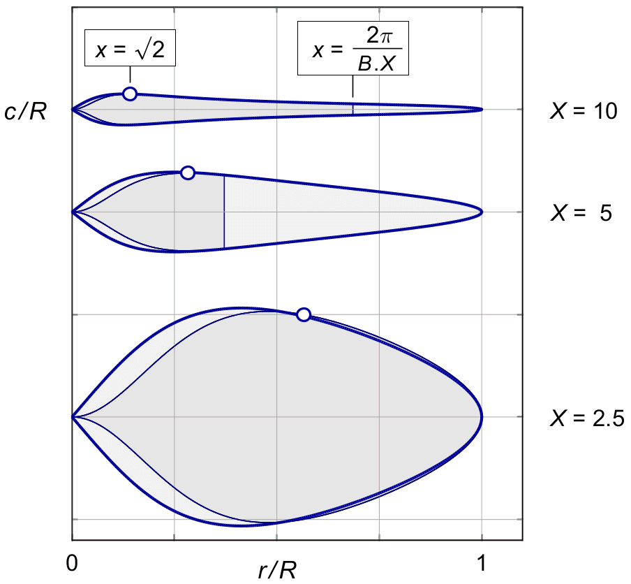
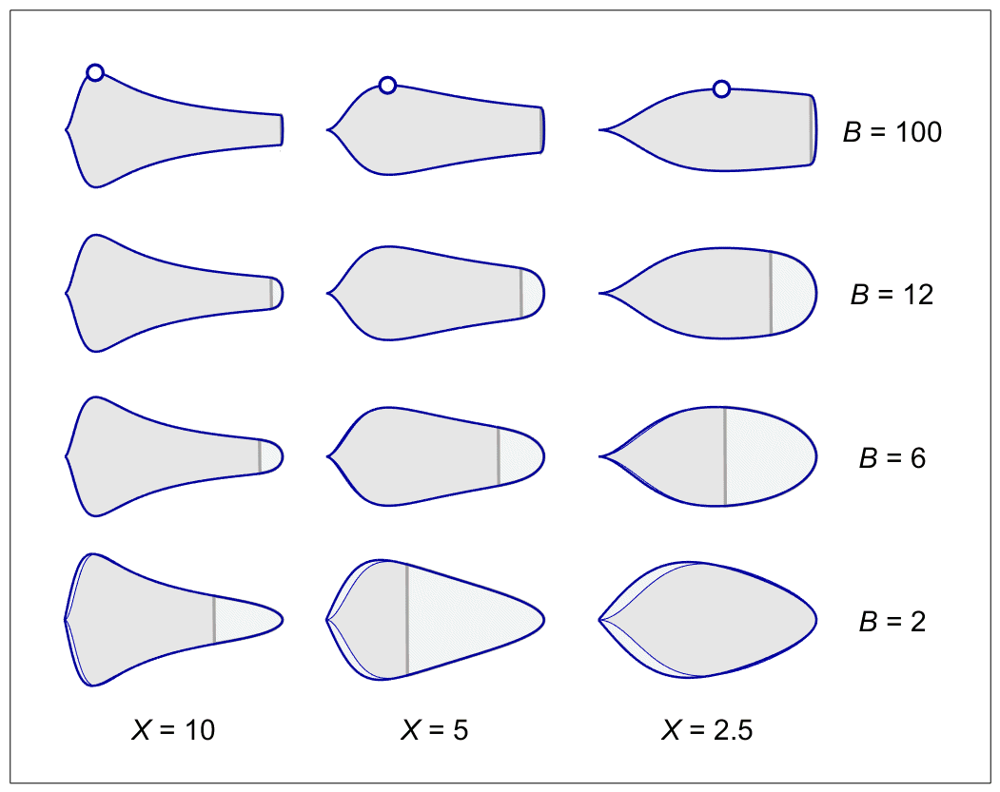

CHORDS
Equation ( 27.19 ) gave the blade chord for the rotationally optimized b ( x ), of ( 11.10 ), combined with the uniform mass flow ( 7.7 ), giving the local thrust dT of (27.1).
With tip loss, the mass flow is no longer uniform.
Towards the tip it is reduced by a local factor of
K ( x ),
defined by
( 17.3 ).
For a given overall thrust, the total mass reduction
is compensated for by a uniform induction
increase
This changes the rotationally optimal chord distribution for a given overall thrust from ( 27.19 ) into :
| (28.1) |
Figure 28.1 shows the result. It is the direct counterpart of figure 27.3 in terms of thrust and parameter variation, only this time including the tip loss. The exact solution is drawn in solid lines, and Prandtl's approximation in thin lines. The differences are limited to the hub region.

Figure 28.1 :
Optimal chords with tip loss.
Two blades, thrust T ' = 0.1,
CL = 0.4.
Chapter 27 explored the basic parameters influencing the blade chord. It gave a simple approximation for the blade chord at 0.7 R in (27.24). This approximation still holds if we replace κφ by κG, and take into account that the correction by K ( x ) is usually small at 0.7R.
The chord at 0.7R varies with 1 / X 2, but the largest chord width varies only by 1 / X. This means that there is a systematic variation with 1 / X in the taper ratio between the widest point and the tip region.
Figure 28.2 shows this variation. The tip speed ratio X decreases when moving from left to right between the pictures. The variation in taper ratio is most visible in the top row, for almost infinitely many blades. The location of the widest point at r / R = √2 / X is indicated by circle markers.

Figure 28.2 : Chord shapes for varying X and B.
Moving along the vertical axis, the plots show the effect of varying the number of blades.
Figure 19.7 showed the relative extent Δr / R = 2 π / ( B . X ) of Prandtl's tip.
For X = 2.5, B = 2 the whole blade is under the influence of the tip function. For our standard example of X = 5, B = 2 it extends over 2π / ( 2 * 5 ) = 0.6 X, which is more than half of the blade length.
Blades with high X are shaped like tapered, pointed saddles.
Blades with low X and low B are shaped like a rounded paddle, or a spoon.
The blades in figure 28.2 were scaled to roughly the same blade width, to show the shape to good advantage. In reality, the variation in overall width with 1 / X 2 as shown in figure 20.2, completely dominates the shape effect.